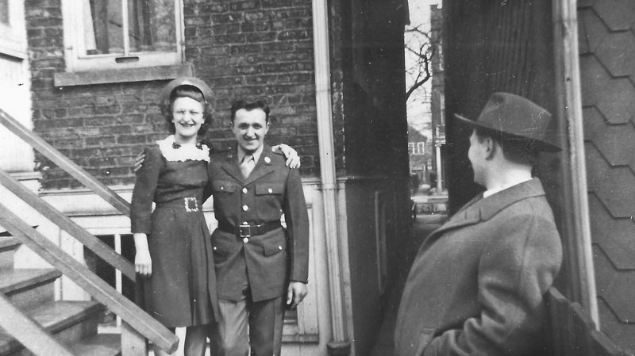
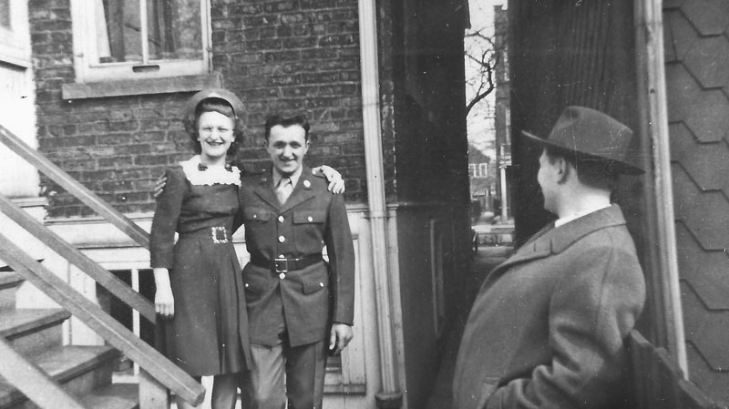
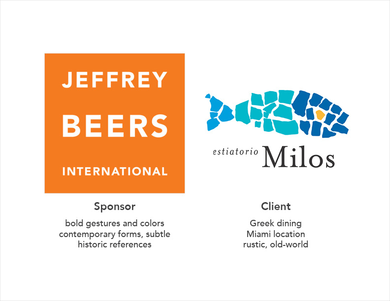
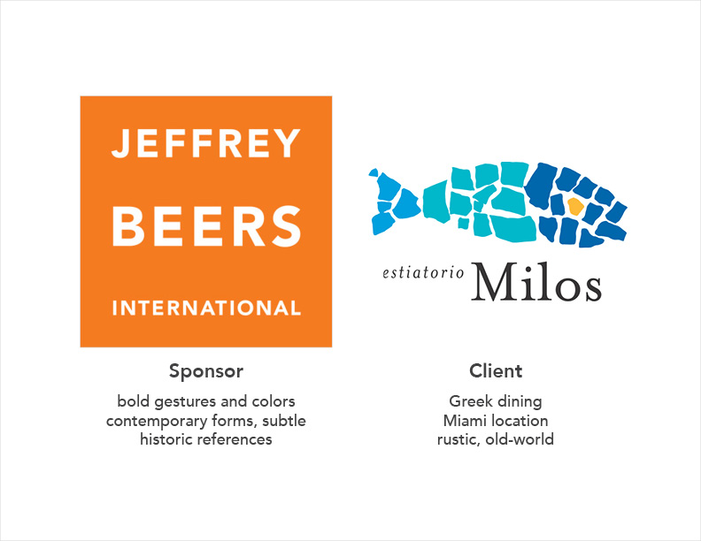
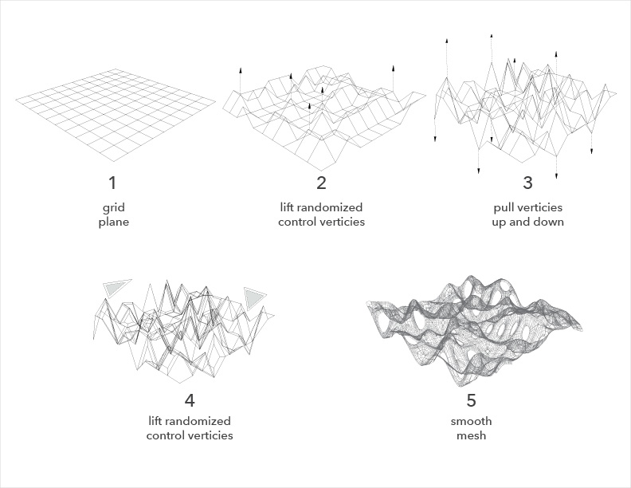
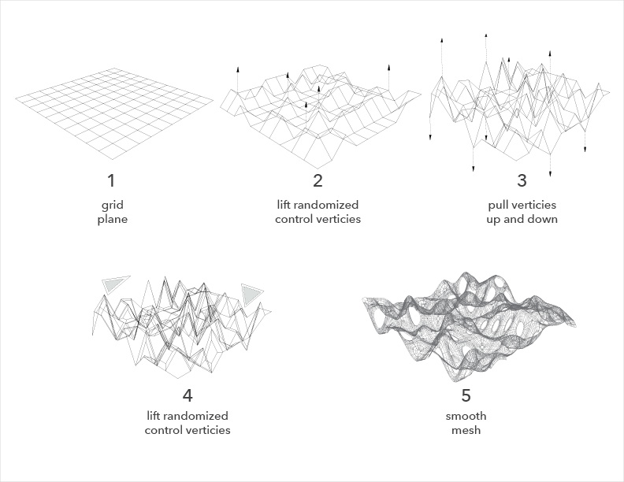
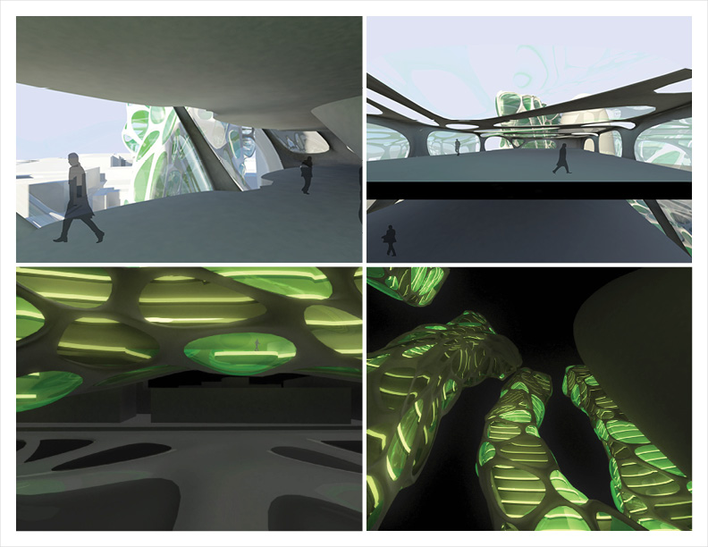
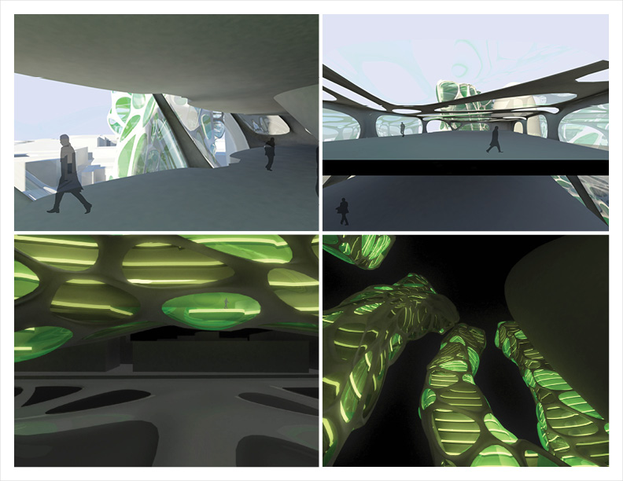

HTML, CSS, jQuery, information architecture, wireframing/prototyping
Photoshop, Illustrator, InDesign, Lightroom, Premiere
portrait, urban, nature, product, astro
SolidWorks, Rhinoceros, Maya, AutoCAD, V-Ray, Keyshot
3D printing (FDM), laser cutting
wood, foam, paper, vacuum forming, pen, marker
clay modeling, plaster moulding, slip casting, glazing
Hydratile
Wave Bar
Zenn II
Seigaiha
Kenkyo Vessel
Herman Miller Internship
LPK Internship
People
Places
Things
Corporal Alexander Pierog
2013
London Commerce Centre
Neat Seat
Corporal Alexander Pierog
Civilian Life
 



Training


Australia


At Sea


New Guinea Camp


New Guinea Natives


Philippines


Herman Miller Internship

Hydratile
Hydratile is a modular ceramic tile that creates a multitude of graphic patterns and spatial forms to evoke literal and symbolic imagery of water. 

Task
The task was to use ceramic slip-casting techniques to design an ceramic object within the design language of Jeffrey Beers International for a speculative use in the design of Estiatorio Milos.
Inspiration
I explored commonalities between Greece and Miami to develop a theme that could be appeciated by both cultures.
Water
The theme of water was chosen and explored to discover attributes that could be translated into ceramic form.
Graphic Tile
This tile uses centered quarter-circles to create opportunities for contiguous curved grooves, regardless of orientation.
Spatial Tile
This tile mimics water's spatial characteristics with rolling waves, creating gradient lighting effects.
Hydratile
Hydratile evokes water, both graphically and spatially. Each graphic pattern also has a unique spatial quality.
Application
The tiled surface can be applied to a multitude of surfaces within the Estiatorio Milos restaurant.
Digital Prototyping
Formal explorations using digital tools allowed for quick discovery of patterns to achieve the optimal balance of visual effect and manufacturability.
Physical Prototyping
Paper models provided quick tangible explorations to determine the overall scale and depth of the grooves. The chosen design was 3D-printed in ABS plastic to serve as an original positive for the plaster mould.
Production
Using a single mould, initial tests determined optimal casting, drying, firing, methods. Once the process had been optimized, several moulds were created to produce a large number of tiles in a limited time period.
Glazing
Several glaze options and application techniques were explored.


Kenkyo

Inspiration
Two hands are used to express respect and humility, kenkyo in Japanese, when giving or receiving within many East Asian social heirarchies.Character Development
Initial sketches explored character that conveys the respect in the bowing gesture.
Physical Development
Clay models explored form, scale and ergonomics. The final form was derived from a reduction of curves and geometry.
Production
Producing the vessel began by creating a plaster mould mased on the final clay positive model, followed by casting, adjusting, drying, and glazing.
Use
The vessel's soft form invites use, while its scale requires the support of two hands when lifting and pouring, thus compelling the user to make a gesture of kenkyo.London Commerce Centre
 

Exploration
Several distinct patterns were developed using 3D modeling software, Maya. Each pattern was derived from a distinct set of commands in a specific order.
Families
Once several patterns had been developed, they were applied to a cubic surface. One was chosen for further exploration due to its ability to handle edges and corners.
Application
The chosen pattern was then applied to a generic building form.
Structural Development
Translating the pattern into an architectural system entails a exoskeletal stucture, bisected by floorplates, and enclosed by concave and convex glass lenses."Bump"
When applied as a facade, the bump pattern creates spaces that can be opportunities for visual connection between inhabitants and air circulations. When applied as a ground condition, it demarcates spaces for specific activities.
Prototyping
Rapid prototyping was used to quickly test the textural qualities of the pattern in addition to producing representations for study and presentation.
Site
The site, located around the 30 St Mary Axe building in London, also known as 'The Gherkin', application of this pattern requires the demolition of existing buildings around the site and projection of the pattern as a ground condition.Transit Hub
The building complex can serve as office space above, public space near ground level, and as a transit hub with its connection to the London Underground. 


LPK Furniture Design Internship

Ideation Sketching
Furniture concepts were developed and presented quickly using ideation sketches
Technical Drawings
Once a concept had been approved for further development, technical drawings were made to understand scale and manufacturing possibilities.
W Group
A series of coffee tables were explored using the formal influence of the letter 'W'.
Entry Sets
These residential entry furniture pieces provide cleanly-styled and useful storage options when entering or exiting your home.
Partition Shelves
Ideal for someone living in a studio space, the partition shelf stylishly provides visual privacy whilst functioning as a place to store/display posessions.
Dining Desk
The dining desk targets the young professional who often works from home and whose limited space demands a high level of versatility in his or her furniture.
Nesting Saddle Stools & Expanding Table
Targeting the space and budget-conscious, nesting saddle stools provide seating for two that can be stored using the space of one. When paired with a folding gateleg dining table, this set allows a couple to accomodate dinner guests comfortable while not sacrificing their limited space.Neat Seat
Design Considerations
The target market was the budget/temporary/space-conscious user. Flat-pack design ensures maximum distribution and storage efficiency. High-density fiberboard was chosen for its relative strength, small environmental footprint, and inexpensive material.
Sheets
All six pieces of this chair are cut from three standard 24" x 48" sheets of high-density fiberboard. The total cost for three sheets was $12.
Manufacturing Specifications
The pieces were designed to require minimal cuts and their manufacture to require only a table saw and band saw.Design Considerations
The target market was the budget/temporary/space-conscious user. Flat-pack design ensures maximum distribution and storage efficiency. High-density fiberboard was chosen for its relative strength, small environmental footprint, and inexpensive material.Assembly
The Neat Seat can be assembled by one person in a few steps.
People


Places


Seigaiha


Inspiration
The Seigaiha pattern, literally 'wave crest pattern', is an traditional Japanese pattern that has become ubiquitous throughout East Asia and the world. Whether it be on traditional fabrics, ceramics, skin, or even modern products, it's form and application are two-dimensional.Profile Development
To ensure a modular fit, the two-dimensional profile was derived by exploring the spacing of a 4 x 4 matrix of overlapping circles.
Band Development
The number of equidistant front-facing bands was explored to find the optimal balance of detail and clarity.
Three-Dimensional Development
Various surface depths were explored for their effect on shadow and gradient. The chosen depth maintains both a two-dimensional graphic quality as well as a three-dimensional subtlety that rewards the careful viewer.
Production
The final design was 3D-printed using PLA plastic. Limitations of hte 3D-printing process required its surface to be finished smooth using sandpaper. A paper box lined with impermeable tape was constructed to house the mould. With the mould prepared, white places compound was poured into the mould's void and allowed to cure.
Evocations
When assembled together, the depth and form of the tiles resembles scales of a fish, as well as cresting ocean waves.


Things


2013
Wave Bar


Market Studies
Existing home bar sets from comparable companies were studied to assess expected features, materials, price points, etc., and to discover potential market opportunities. This was aimed at the $500 level, priced below most comparable existing bars without sacfricing style.
Inspiration
The simple but sturdy construction of bookcases provided structural guidance. Spare pieces from another project provided unexpected inspiration for the form of the facade.
Concept
The Wave Bar incorporates findings from market studies and provides a cost-effective and sturdy structure, while providing an aesthetically-pleasing lattice form that continues from solid to void.Development
Multiple combinations of material and lattice form were considered, weighing aethetics and perceived value with material costs. The uniform lattice was ultimately chosen, largely due to its cost savings from using only one mould to create all the lattice pieces.
Flat Pack Design
The Wave Bar and all the parts that make up the assembly were designed for maximum efficiency in transportation and storage through flat pack design.
Lattice Prototyping
The lattice pattern was produced by constructing a mould with the lattice profile and vacuum-forming glued five stacks of plywood sheets to this mould. The same profile was CNC routed out of the front panel to continue the pattern in void.
Finishing
Once all the necessary pieces were cut, bend, and/or sanded, the surfaces were treated with a cherry stain.
Presentation
The built prototype was displayed at World Market Center in Las Vegas in July of 2013, where it was met with great reception and is currently being refined for production.Zenn II

Existing Product
The original Zenn end table features a stainless steel frame and a single tempered glass surface.Market Studies
Existing end tables of similar material and style were studied to assess expected features, materials, price points, etc., and to discover potential market opportunities. This was aimed at the $130 level, priced to compete with others while offering two surfaces and an architectural styling.
Concept
The Zenn II adds an additional lower surface, delivering added value to the user while maintaining the minimal character of the original Zenn end table.
Manufacturing
The top glass surface, the steel piece that joins to it, and all hardware are identical to the original Zenn end table. Additional components require use of the same materials vendors and only minor changes to the manufacturing process to produce.Alternative Designs
Several alternative finishing variations were considered, though the stainless steel and uncolored glass were chosen for their purity in maintaining the minimalist character.
Prototyping
In order to prototype this piece, the custom parts necessary were fabricated to the designed specifications. Glass was ordered for the shorter lower shelf and all parts were assembled in-house.
Presentation
The built prototype was displayed at World Market Center in Las Vegas in July of 2013, where it was met with great reception and is currently being refined for production.
Hello! My name is and I enjoy clean and simple design solutions. My roots are in , the place I currently call home.